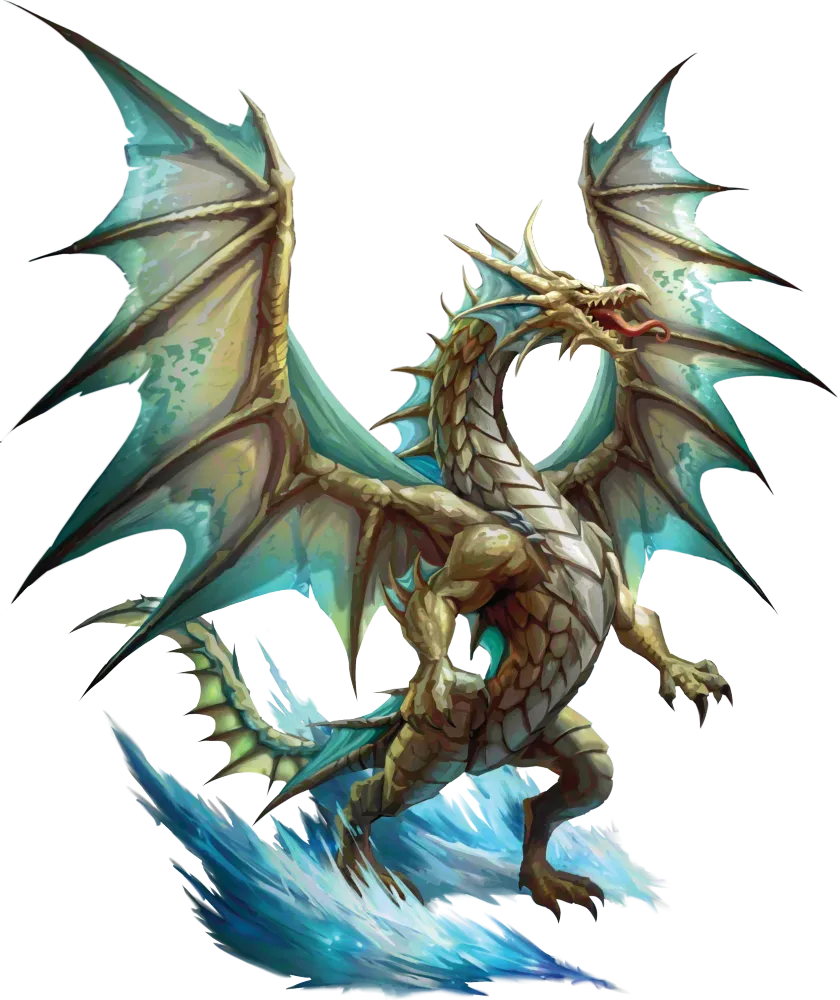

各年龄段数据卡
太古青铜龙比它们年轻的同族更加孤高冷峻、坚忍寡言；它们愈发深居简出，隐退于舒适安宁的图书馆巢穴深处，在那里妥善保存古老的知识与智慧，守护这些秘辛免遭形形色色窃贼的觊觎――其中也包括那最阴险、最无情的窃贼：时间。随着太古青铜龙一头扎进浩瀚书海、越陷越深，它们的博学才识与学术造诣固然变得愈发深不可测，但对时事动向的把握却日渐枯萎脱节――这一点恰好与生性合群、消息灵通的太古黄铜龙截然相反。 偶尔，一项意义重大的壮举也能惊动太古青铜龙出山行动。举例而言，较年轻的青铜龙常常担任海上向导，在危机四伏的汪洋航程中护送并保卫怀有崇高目标的船只。对于一艘船的船员来说，能够引来青铜龙的垂青就意味着能平安抵达目的地；这促使许多人刻意宣扬自己的善意初衷、夸大自身的美德，甚至向潜在的守护者献上厚礼。然而青铜龙对这种曲意逢迎嗤之以鼻，甚至一想到自己的眷顾竟能被“收买”，便会深感冒犯。 不过，真正品行高洁、怀揣正义之志的航海者，依然能在险恶大海上寻得青铜龙作为向导与守护者。但要想让一条太古青铜龙亲自为你的航程侧目，那必须是一场真正具有神话史诗格局的远征――譬如寻访一座据传可追溯至旧神纪元、藏有远古图书馆的失落孤岛，又或是远征某位妄图统治世界的强大恶魔领主孤悬海外的堡垒。即便如此，太古青铜龙同意担任海上向导，也绝不意味着它会包办随后的战斗。太古银龙或许会毫不犹豫地冲锋陷阵、与那位恶魔领主正面交锋；但绝大多数太古青铜龙更倾向于扮演辅助者的角色――它们会指引英雄们顺利抵达恶魔领主的海底宫殿，随后便将最终的决战留给那些前来寻求巨龙襄助、年轻无畏的凡人勇士自己去完成。 有时，也会有恳求者前来寻访太古青铜龙严密隔绝于外界视野之外的秘藏知识。想要说服一条固执的太古青铜龙吐露秘辛――尤其是那些被它判定为危险禁忌的知识――绝非易事。唯有心怀谦逊前来拜谒、献上罕见学识作为交换，并顺利通过太古龙考验的人，才更有希望得偿所愿。 约林维洛里克斯作者：埃里克・库奇斯卡（Eric Kucskar） 青铜龙对于“何为治学正道”抱有一套在我看来颇难苟同的见解。不过，在它们之中，恐怕没有谁能像太古龙约林维洛里克斯这样持之以恒、条理清晰地阐述这套理念了――他至今仍与我保持着令人印象深刻的书信往来。尽管我们一致认同田野调查与亲身实验是理解这个世界不可或缺的基石，但约林维洛里克斯却想两头占尽便宜：他更喜欢让别人代劳去跑“田野调查”，自己则安坐于庞大无垠的水下图书馆中。在自己那方与世隔绝的气泡天地里，他悉心培育着设计精巧繁复的珊瑚花园，并招揽了一圈志同道合的研究者。在派遣这些人代自己外出考察之前，他会先确保他们全都像乖巧听话的小工蜂一样，认同他所推崇的正直、诚实与慷慨等价值观。这位太古龙绝非蠢材。他以自身所藏知识的守门人自居（搞得好像他真有这个权利似的），将任何可能滥用知识之徒统统拒之门外。但我始终认为，知识理应由世人共享。他将相当大一部分精力花在自己那尘埃不染的密室里，逐一核验他人的研究成果与结论，以抵制谬误信息的传播――毕竟他从不踏出洞窟半步，若不如此，便极易受假消息蒙蔽。每当发现错漏或他认为有悖常理之处，他总会迅速发表长篇大论予以驳斥。想要加入他的麾下？那就证明你的事业足够崇高，或者通过他的考验吧；届时他便会在某座隐秘仓库或珊瑚花园中接见你，进行最终的评估。 |
 太古青铜龙 |